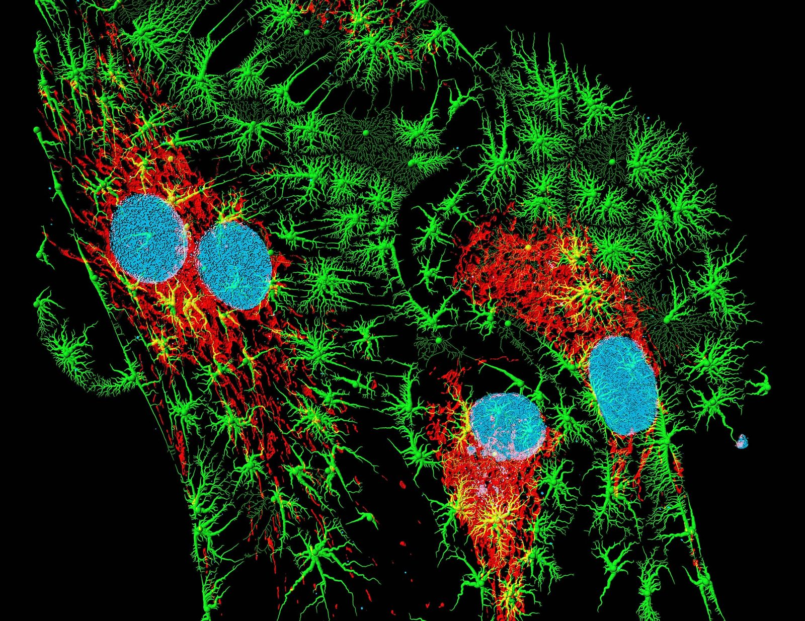
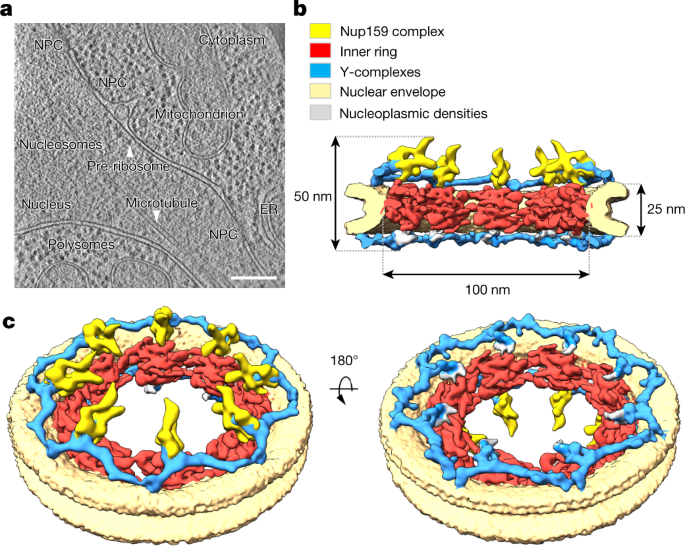

The gate and the traffic
How is the nuclear pore complex organized at the nanoscale — and does that organization shape the molecules passing through it?
Starting from a simple question
Every molecule that needs to travel between the nucleus and the cytoplasm — proteins, RNA, signaling factors — must pass through the nuclear pore complex (NPC), one of the largest protein machines in the cell. The NPC is both a massive, highly ordered scaffold and a dynamic gate. My central research interest is the relationship between these two faces of the pore: how the nanoscale organization and dynamics of FG-nucleoporins (FG-Nups) relate to transport through individual NPCs.

The nuclear pore complex in context
A structural model of the NPC embedded in the nuclear envelope. The scaffold components are color-coded to show how dozens of nucleoporin copies assemble into a symmetric, channel-like machine. Reference illustration for orientation — not original experimental data.
Where I am now: building the foundation
I am a first-year PhD student at the very start of my dissertation work, so this page describes my research interests and planned directions — not finished discoveries. My immediate interest is a careful, deliberately unglamorous one: optimizing and validating fixation methods for reliable three-dimensional imaging of FG-Nups.
The central challenge is honesty about the images themselves: distinguishing genuine biological variation in spatial organization from changes introduced by fixation, labeling, or imaging. Working with my mentor, I would begin with a defined labeling strategy and a limited set of fixation conditions, comparing fluorescence quality and the reproducibility of spatial measurements across biological replicates — and only then identifying conditions trustworthy enough for structural comparisons. All of this serves one biological question: how FG-Nups are actually arranged inside individual pores.

The pore, seen in fluorescence
A multicolor super-resolution image of cells, at a resolution where structure starts to speak. I am training in these imaging techniques because they are how I will ask my real question — how individual nuclear pore complexes are organized at the nanoscale. Reference image from my microscopy collection — not original data.
What I hope to investigate next
Once a reproducible baseline is established, I hope to investigate structural heterogeneity among individual NPCs — and, subsequently, across defined cellular conditions. I am interested in 3D photoactivated localization microscopy (3D PALM) and MINFLUX as potential approaches to nanoscale localization; whether they are used will depend on the biological question, the labeling requirements, the available instrumentation, and my training. A solid baseline comes first — expanding to multiple conditions comes later.

What we already know: NPC architecture from cryo-EM
A composite figure of the yeast nuclear pore complex. Panel (a) shows a cryo-electron tomogram with NPCs, mitochondria, and the endoplasmic reticulum labeled; panels (b–c) show a 3D reconstruction with the Nup159 complex (yellow), inner ring (red), Y-complexes (blue), and nuclear envelope (tan). Original scale bars and labels are preserved. Adapted from published literature — reference illustration, not original data.
The longer-term goal
Ultimately, I want to connect structural measurements with live-cell single-molecule observations — including SPEED measurements — under matched biological conditions. Fixed-cell images alone cannot reveal molecular dynamics, and a structural association does not establish a transport mechanism. Combining these approaches could help generate testable explanations for how FG-Nup organization relates to molecular movement through the NPC. Through this work, I aim to develop genuine expertise in quantitative microscopy and contribute to a clearer understanding of selective nucleocytoplasmic transport.
Microscopy techniques I am training in
Microscopy is my toolkit, not my subject. My questions are about the nuclear pore
complex — its organization, its nucleoporins, how they move. To answer them I am
learning: cell culture · fixation & labeling chemistry · super-resolution
fluorescence (3D PALM, MINFLUX — planned) · single-molecule imaging (SPEED — planned) ·
quantitative image analysis.
Status: learning. Listed as directions of training, not established expertise.
My lab
I conduct my doctoral research in the Yang Lab at Temple University, which studies nucleocytoplasmic transport and develops single-molecule imaging approaches such as SPEED microscopy. This direction aligns closely with the lab's research, and I am grateful to be learning in that environment.
Visit the Yang Lab website ↗Publications
None yet — I am at the beginning of my PhD. Stay tuned.